Change Point Packages in R: A Practical Guide
Source:vignettes/packages_overview.Rmd
packages_overview.RmdThe R ecosystem for change point analysis spans three primary areas of application:
- Segmented & Piecewise Regression: Estimating the parameters of explicitly specified piecewise models where change points, slopes, plateaus, GLM likelihoods, random effects, or prior constraints are scientifically meaningful parameters.
- Time Series Decomposition & Structural Breaks: Isolating unknown trend shifts, periodic seasonality, parameter instability, and dynamic shrinkage in time series.
- Algorithmic Change Point Detection & Meta-Packages: Finding unknown shift points algorithmically in large data streams with minimal runtime, multiscale guarantees, multivariate distributions, or unified meta-interfaces.
Packages in this ecosystem are not strictly confined to a single
role; several packages (such as mcp, smoothbp,
and strucchange) appear across multiple tasks depending on
the analytical goal. This guide evaluates how packages perform on common
benchmark problems to compare workflow, parameter recovery, and
uncertainty estimation.
Overview of Package Capabilities
The table below outlines the primary functional focus of key packages across core modeling dimensions:
| Package | Paradigm | Primary Tasks | Segmented Regression | GLM Likelihoods | Group / Random Effects | Transition Modeling | Location Uncertainty | Autoregression & Heteroscedasticity |
|---|---|---|---|---|---|---|---|---|
mcp |
Bayesian | Regression, Time Series | High | High (Gaussian, Binomial, Poisson, NegBin) | High (on CPs & slopes) | Abrupt (discontinuous or joined) | Posterior densities & credible intervals (ETI / HDI) | High (sigma(), ar(),
ma()) |
smoothbp |
Bayesian | Regression, Break Selection | High | - (Gaussian only) | Moderate (on CPs & slopes) | Smooth (logistic transition) | Posterior densities & PIPs | - |
segmented |
Frequentist | Regression | High | High (glm(), coxph()) |
Moderate (lme() integration) |
Continuous joined lines only | Frequentist SE & CIs (delta, score, boot) | Basic (Arima()) |
Rbeast |
Bayesian | Time Series Decomposition | Moderate (univariate trends) | - | - | Abrupt & gradual | Posterior changepoint probabilities | Seasonal decomposition |
dsp |
Bayesian | Time Series, Trend Filtering | Moderate (trend filtering) | - | - | Latent dynamic shrinkage | Posterior state distributions | Time-varying & heteroscedastic |
strucchange |
Frequentist | Time Series, Regression | Moderate | Basic | - | Abrupt (step/slope breaks) | Asymptotic confidence intervals (Bai 1997) | Empirical fluctuation tests |
changepoint |
Algorithmic | Detection (Throughput) | Basic (mean/var) | - | - | Abrupt | Point estimates only | - |
bcp |
Bayesian | Detection | - | - | - | Abrupt (step changes) | Pointwise posterior break probabilities | - |
stepR |
Algorithmic / Multiscale | Detection, Inference | Basic (mean/var) | - | - | Abrupt | Simultaneous confidence intervals & bands (HSMUCE) | Segment-specific variance |
ecp |
Nonparametric | Detection (Multivariate) | - | Nonparametric | - | Abrupt | Permutation p-values | Multivariate joint distributions |
Benchmark Regression Data
To compare how different packages handle change points and parameter recovery in regression settings, we generate a synthetic dataset () with two true change points at and :
- Segment 1 (): Plateau at .
- Segment 2 (): Joined linear slope of per unit , starting from .
- Segment 3 (): Disjoined step jump to intercept with a downward slope of per unit .
- Residual error: Gaussian noise with .
set.seed(42)
df = data.frame(
x = seq(1, 100),
y = c(
rnorm(30, mean = 10, sd = 2),
10 + 0.5 * (1:40) + rnorm(40, sd = 2),
20 - 0.3 * (1:30) + rnorm(30, sd = 2)
)
)
plot(df$x, df$y, xlab = "x", ylab = "y", pch = 16, col = "gray40", main = "Benchmark Regression Data")
abline(v = c(30, 70), col = "firebrick", lty = 2, lwd = 1.5)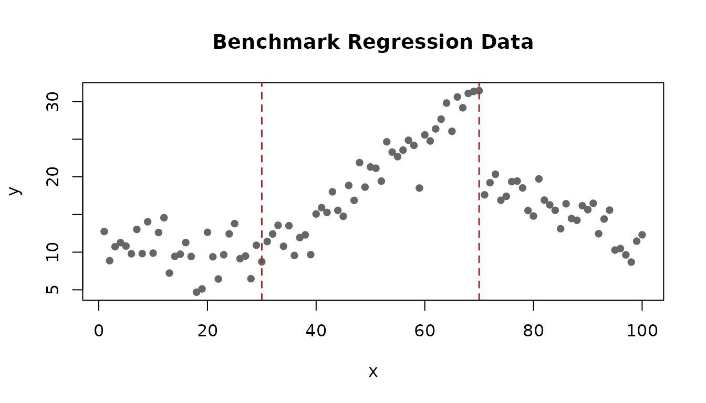
Application 1: Segmented & Piecewise Regression
Segmented regression packages estimate interpretable regression parameters (slopes, intercepts, and change point locations) along continuous predictors. Here, the changepoints and the relationships before and after them are scientifically meaningful parameters.
Coordinate System: Segmented Regression
The segmented regression landscape trades off transition & structural flexibility (continuous joined lines, discontinuous vertical steps, smooth logistic transitions, hierarchical varying effects, and prior constraints) against likelihood & residual complexity (GLMs, heteroscedasticity, and autoregressive noise):
library(ggplot2)
df_coord_task1 = data.frame(
pkg = c("mcp", "smoothbp", "segmented", "strucchange", "bentcableAR", "BreakPoints"),
x = c(9.0, 8.5, 3.5, 5.0, 6.0, 3.0),
y = c(9.0, 3.5, 7.5, 3.5, 4.5, 6.0),
paradigm = c("Bayesian (MCMC)", "Bayesian (Rust)", "Frequentist (IRLS)", "Frequentist (OLS)", "Bayesian / NLS", "Frequentist (GLM)")
)
ggplot(df_coord_task1, aes(x = x, y = y, label = pkg, color = paradigm)) +
geom_point(size = 3.8, alpha = 0.9) +
geom_text(aes(y = y + 0.45), fontface = "bold", size = 3.8, show.legend = FALSE) +
scale_x_continuous("Structural & Transition Flexibility\n(Strictly joined linear -> Discontinuous steps & plateaus -> Smooth transitions + Covariates / Random effects)", limits = c(1, 10.5)) +
scale_y_continuous("Likelihood & Residual Complexity\n(Gaussian only -> GLMs [Binomial, Poisson, NegBin] + Heteroscedasticity [sigma] + ARMA)", limits = c(1, 10.5)) +
scale_color_brewer(palette = "Dark2") +
labs(title = "Task 1: Segmented & Piecewise Regression Landscape", subtitle = "Trade-off between structural transition flexibility and likelihood / residual complexity") +
theme_minimal(base_size = 11) +
theme(
panel.grid.minor = element_blank(),
panel.grid.major = element_line(color = "gray90", linewidth = 0.5),
panel.border = element_rect(color = "gray80", fill = NA, linewidth = 0.8),
plot.title = element_text(face = "bold", size = 12),
plot.subtitle = element_text(color = "gray35", size = 9.5),
legend.position = "bottom",
legend.title = element_text(face = "bold", size = 9),
legend.text = element_text(size = 8.5),
axis.title = element_text(face = "bold", size = 9.5)
)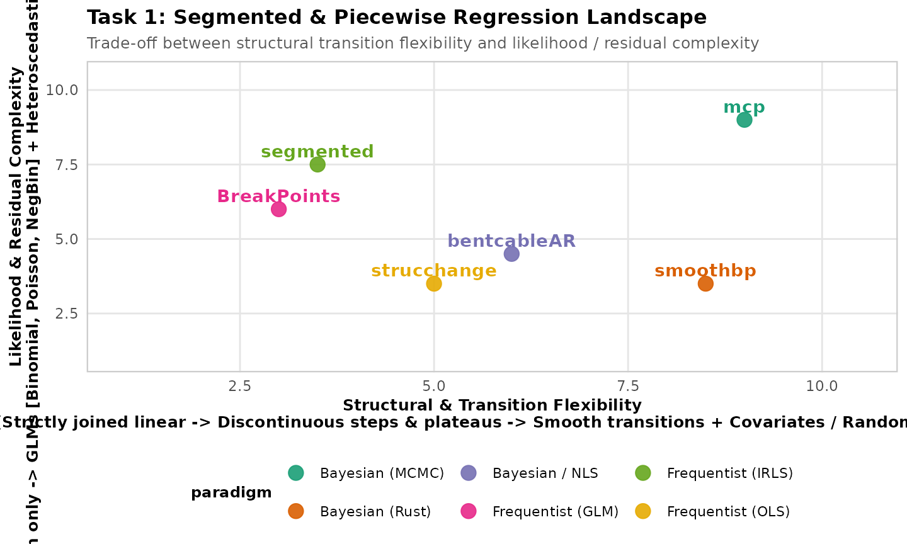
mcp: Generative Regression with Multiple Change
Points
mcp provides an expansive generative regression language
where each segment can have its own functional form (plateaus, joined
slopes, disjoined steps, polynomial terms, and varying effects).
library(mcp)
# 3-segment model: plateau -> joined slope -> disjoined step and slope
model = list(
y ~ 1, # Segment 1: plateau (Intercept_1)
~ 0 + x, # Segment 2: joined slope (x_2) at cp_1
~ 1 + x # Segment 3: disjoined step & slope at cp_2
)
fit_mcp = mcp(model, data = df, seed = 42, adapt = 500, iter = 1000)
summary(fit_mcp)
#> Family: gaussian(link = 'identity')
#> Iterations: 1000 from 3 chains.
#> Segments:
#> 1: y ~ 1
#> 2: y ~ 1 ~ 0 + x
#> 3: y ~ 1 ~ 1 + x
#>
#> Change point parameters:
#> name mean sd lower upper rhat ess_bulk ess_tail
#> cp_1 32.98 1.777 29.33 36.22 1 164 269
#> cp_2 70.50 0.284 70.02 70.98 1 1737 2629
#>
#> Population-level parameters:
#> name mean sd lower upper rhat ess_bulk ess_tail
#> Intercept_1 10.31 0.408 9.48 11.08 1 410 784
#> x_2 0.56 0.037 0.49 0.64 1 180 436
#> Intercept_3 19.27 0.772 17.75 20.73 1 335 701
#> x_3 -0.26 0.045 -0.35 -0.18 1 330 675
#> sigma_1 2.11 0.156 1.83 2.43 1 1685 1557
#>
#> Warning: 4 parameters show poor convergence (rhat > 1.01 or ess_bulk < 400 or ess_tail < 400).
set.seed(42)
plot(fit_mcp, q_fit = TRUE)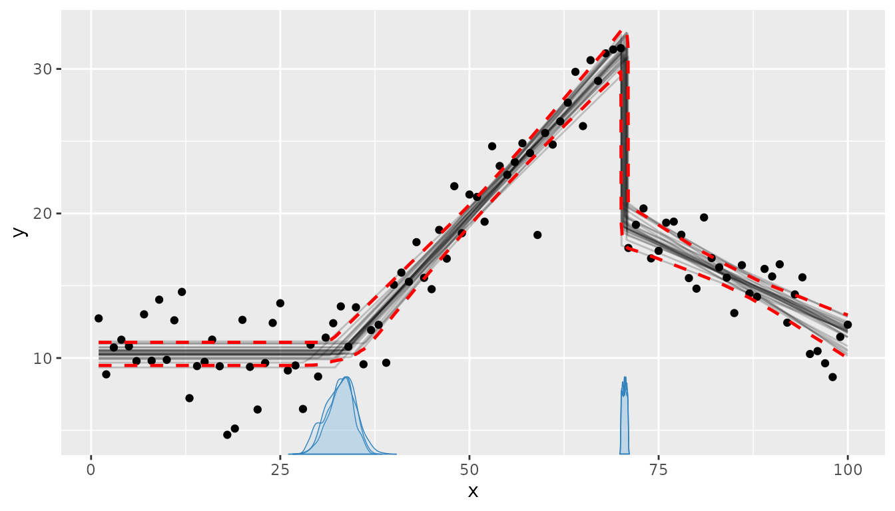
mcp recovers both change points
(cp_1 = 33.0 [29.2, 36.2],
cp_2 = 70.5 [70.0, 71.0]) and accurately estimates the
segment parameters (Intercept_1 = 10.3,
x_2 = 0.56, Intercept_3 = 19.5,
x_3 = -0.28, sigma_1 = 2.12) within their 95%
highest-density intervals.
Key capabilities:
- Arbitrary per-segment formulas: Segments can independently combine intercepts, continuous slopes, categorical contrasts, polynomial terms, and fixed values.
-
Generalized linear models: Supports
gaussian(),binomial(),bernoulli(),poisson(), andnegbinomial(). -
Group-level (random) effects: Hierarchical
deviations on change points (
1 + (1|id) ~ ...) and on segment slopes and intercepts. -
Variance & Autocorrelation regression: Models
heteroscedasticity (
~ sigma(1 + x)) and serial dependence (~ ar(1)) per segment. -
Inference & Hypothesis testing: Full posterior
distributions for change points, Savage-Dickey Bayes factors, and
loocross-validation. - Speed on typical models: JAGS has zero compilation overhead and fits standard 1–3 change point models in under 1–5 seconds.
Constraints:
- Computation uses MCMC sampling (JAGS), requiring more compute time on large datasets (>20,000 observations) or models with change points than closed-form alternatives.
- Selecting the number of change points is performed via model comparison rather than within a single model fit.
smoothbp: Smooth Transitions and Breakpoint
Selection
smoothbp fits Bayesian piecewise linear regression using
a compiled Rust sampler, modeling continuous transitions between slopes
with variable sharpness. Because default priors assume a standardized
predictor scale, setting priors scaled to the predictor range
()
ensures proper calibration:
library(smoothbp)
priors_sbp = smoothbp_priors(
b0 = prior_normal(10, 20),
b1 = prior_normal(0, 5),
deltas = list(prior_normal(0, 5), prior_normal(0, 5)),
omega = list(prior_normal(30, 20, lb = 0), prior_normal(70, 20, lb = 0)),
rho = list(prior_normal(2, 5, lb = 0), prior_normal(2, 5, lb = 0))
)
# Fit smooth change-point model with 2 breakpoints
fit_sbp = smoothbp(
formula = y ~ x,
b0 = ~ 1, # Baseline intercept
b1 = ~ 1, # Baseline slope
deltas = list(~ 1, ~ 1), # Slope changes at each breakpoint
omega = list(~ 1, ~ 1), # Breakpoint locations
rho = list(~ 1, ~ 1), # Transition sharpness parameters
data = df,
priors = priors_sbp,
iter = 1000,
warmup = 500,
chains = 2,
seed = 42,
.verbose = FALSE
)
summary(fit_sbp)smoothbp estimates omega1 = 30.09 (true:
30) and omega2 = 63.86. Change point posterior
distributions can be visualized directly using
plot(..., type = "density"):
Notice the structural difference between smoothbp’s
posterior and mcp’s cp_1: in mcp,
cp_1 is an instantaneous, sharp non-differentiable corner,
capturing all observational location uncertainty into a single
parameter. In smoothbp,
represents the inflection midpoint of a continuous logistic transition
curve whose width is parameterized by sharpness
.
Additionally, plot.smoothbp_fit() renders separate overlaid
density curves per MCMC chain, which reflect chain-specific exploration
along the non-linear
likelihood ridge.
Key capabilities:
- Gradual transitions: Replaces sharp corners with estimated logistic transition widths ().
- Covariates on structural parameters: Regresses change-point locations () and transition sharpness () on covariates.
-
Spike-and-slab selection
(
smoothbp_ss): Computes posterior inclusion probabilities (PIPs) for candidate breakpoints within a single model fit. -
Hierarchical breakpoints: Supports random
intercepts on change-point locations (
(1|group)).
Constraints:
- Limited to Gaussian response models. Non-Gaussian GLMs (Poisson, Binomial) and ARMA residual structures are not supported.
- Models continuous slope transitions; discontinuous intercept step changes across segments are not directly parameterized.
- While the sampler is compiled in Rust, evaluating multiple logistic
transitions across high-dimensional parameter spaces
()
is computationally demanding and does not outpace
mcpon typical models.
segmented: Frequentist Piecewise Regression
segmented estimates breakpoints by extending standard
frequentist regression models (lm, glm,
coxph, Arima).
library(segmented)
# Fit base linear model, then estimate 2 change points along x
fit_lm = lm(y ~ x, data = df)
fit_seg = segmented(fit_lm, seg.Z = ~ x, npsi = 2)
# Breakpoint estimates and standard errors
fit_seg$psi
#> Initial Est. St.Err
#> psi1.x NA 29.39549 2.249705
#> psi2.x NA 63.99989 1.235050
# 95% Confidence intervals for breakpoints
confint(fit_seg)
#> Est. CI(95%).low CI(95%).up
#> psi1.x 29.3955 24.9287 33.8623
#> psi2.x 63.9999 61.5477 66.4521
# Plot fitted piecewise regression lines
plot(fit_seg, conf.level = 0.95, rug = FALSE, main = "segmented fit")
points(df$x, df$y, pch = 16, col = "gray60")
lines(fit_seg, col = "blue", lwd = 2)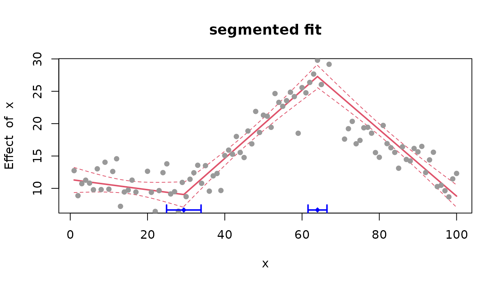
segmented estimates
psi1.x = 29.40 (95% CI: [24.93, 33.86]) and
psi2.x = 64.00 (95% CI: [61.55, 66.45]).
Important limitation: segmented is designed for
continuous (joined) piecewise lines only. Because
segmented() enforces continuity across segments, it cannot
model a simultaneous slope change and discontinuous vertical jump. To
bridge the step down at
,
segmented places psi2.x earlier (around 64)
with a steep connecting slope. If your data contains discontinuous step
jumps between segments, use mcp or
strucchange.
Key capabilities:
-
Workflow integration: Works directly on fitted
lm,glm, andcoxphobjects. - Execution speed: Uses iteratively reweighted least squares for fast estimation on large sample sizes.
-
Standard frequentist output: Returns point
estimates, standard errors, and confidence intervals via
confint().
Constraints:
- Enforces continuous joined slopes; does not parameterize discontinuous step jumps between slope segments.
- Does not support Bayesian priors, exact posterior distributions on change points, or varying group-level change-point distributions.
Other Segmented Regression Packages on CRAN
-
bentcableAR: Models gradual bent-cable transitions with autoregressive errors; conceptually related tosmoothbpbut focused on single bent-cable models. -
BreakPoints: Multiple structural change point estimation in linear and generalized linear models. -
segmentr: Exact and heuristic segmentation algorithms under customizable segment loss functions. -
BayesPieceHazSelect: Bayesian piecewise constant hazard rate modeling with variable selection. -
PCpluS: Simultaneous estimation of smooth underlying functions and abrupt piecewise-constant changes.
Application 2: Time Series Decomposition & Structural Breaks
Decomposition and structural break packages analyze time-ordered series to separate long-term trends, seasonal components, and parameter instability without requiring predefined segment boundaries.
To illustrate time series modeling, we use the classic annual Nile river streamflow dataset (1871–1970, ), which features a well-documented abrupt downward shift around 1898 following the construction of the Aswan dam:
data("Nile")
df_nile = data.frame(
year = as.numeric(time(Nile)),
flow = as.numeric(Nile)
)
plot(df_nile$year, df_nile$flow, type = "l", lwd = 1.5, xlab = "Year", ylab = "River Flow (10^8 m^3)", main = "Nile River Annual Flow (1871-1970)")
abline(v = 1898, col = "firebrick", lty = 2, lwd = 1.5)While the Nile dataset reflects a single level shift, real-world time
series often feature richer dynamics such as variance regime
changes (e.g. macroeconomic volatility shocks), shifts
in serial persistence (modeled via mcp’s
~ ar(1) or ~ ar(2)), and seasonal
cycles coupled with abrupt policy interventions (e.g. monthly
road casualty drops following mandatory seatbelt legislation in
Seatbelts).
Coordinate System: Time Series Decomposition & Structural Breaks
This domain trades off automated signal decomposition (discovering unknown trends, harmonic seasonality, outliers, and dynamic shrinkage) against scientific generative modeling & hypothesis testing (econometric stability tests, causal counterfactuals, and custom piecewise regression):
library(ggplot2)
df_coord_task2 = data.frame(
pkg = c("mcp", "Rbeast", "dsp", "strucchange", "EnvCpt", "CausalImpact", "mosum"),
x = c(3.0, 8.5, 9.0, 4.0, 6.5, 2.0, 4.5),
y = c(9.0, 7.5, 7.0, 4.5, 5.0, 2.5, 3.5),
paradigm = c("Bayesian Generative", "Bayesian Model Averaging", "Bayesian Dynamic Shrinkage", "Frequentist Econometric", "Frequentist Model Selection", "Bayesian State-Space", "Frequentist Moving Sum")
)
ggplot(df_coord_task2, aes(x = x, y = y, label = pkg, color = paradigm)) +
geom_point(size = 3.8, alpha = 0.9) +
geom_text(aes(y = y + 0.45), fontface = "bold", size = 3.8, show.legend = FALSE) +
scale_x_continuous("Decomposition Scope & Automation\n(Predefined single break -> Automated trend/AR selection -> Latent trend filtering -> Bayesian seasonal + outlier decomposition)", limits = c(1, 10.5)) +
scale_y_continuous("Scientific Modeling & Inferential Depth\n(Causal counterfactuals -> Fluctuation tests -> Trend decomposition -> Custom piecewise generative regression)", limits = c(1, 10.5)) +
scale_color_brewer(palette = "Set1") +
labs(title = "Task 2: Time Series Decomposition & Structural Breaks", subtitle = "Trade-off between automated signal decomposition and customized generative regression") +
theme_minimal(base_size = 11) +
theme(
panel.grid.minor = element_blank(),
panel.grid.major = element_line(color = "gray90", linewidth = 0.5),
panel.border = element_rect(color = "gray80", fill = NA, linewidth = 0.8),
plot.title = element_text(face = "bold", size = 12),
plot.subtitle = element_text(color = "gray35", size = 9.5),
legend.position = "bottom",
legend.title = element_text(face = "bold", size = 9),
legend.text = element_text(size = 8.5),
axis.title = element_text(face = "bold", size = 9.5)
)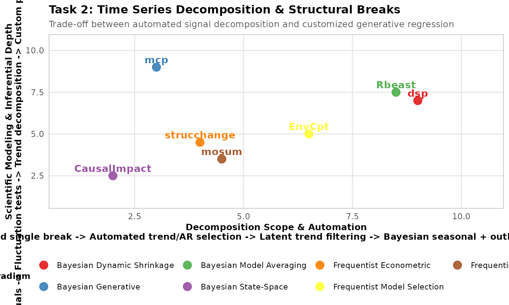
mcp on Time Series
mcp can model time series change points in intercepts,
slopes, autoregressive parameters (~ ar(1)), or residual
variance (~ sigma()):
# 2-segment plateau model for Nile flow
model_nile = list(
flow ~ 1, # Pre-break mean
~ 1 # Post-break mean
)
fit_mcp_nile = mcp(model_nile, data = df_nile, par_x = "year", seed = 42, adapt = 500, iter = 1000)
summary(fit_mcp_nile)
#> Family: gaussian(link = 'identity')
#> Iterations: 1000 from 3 chains.
#> Segments:
#> 1: flow ~ 1
#> 2: flow ~ 1 ~ 1
#>
#> Change point parameters:
#> name mean sd lower upper rhat ess_bulk ess_tail
#> cp_1 1898 0.72 1896 1900 1 1146 810
#>
#> Population-level parameters:
#> name mean sd lower upper rhat ess_bulk ess_tail
#> Intercept_1 1094 25.22 1044 1142 1 1403 1773
#> Intercept_2 851 14.98 822 880 1 2005 1817
#> sigma_1 130 9.57 114 150 1 1577 1571
set.seed(42)
plot(fit_mcp_nile)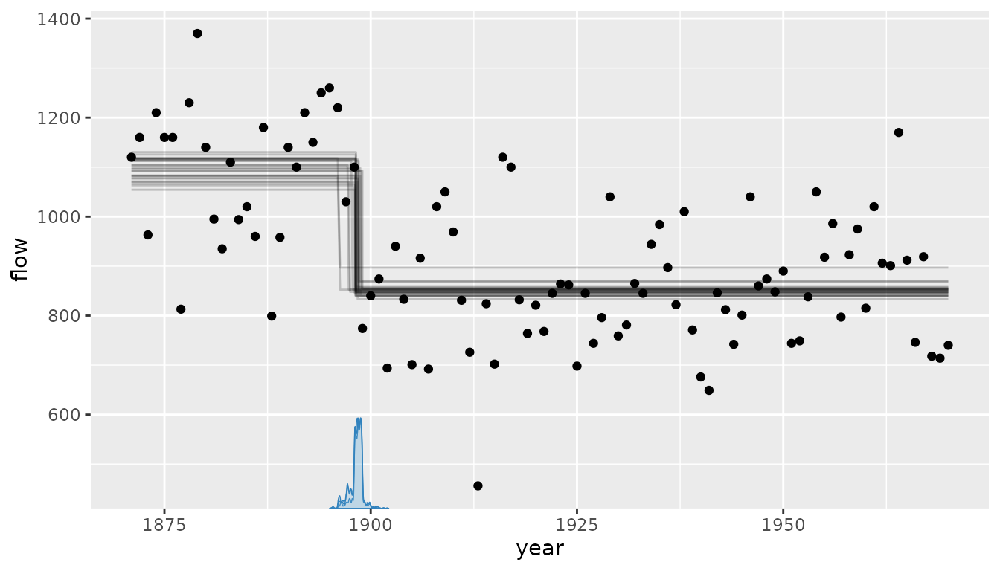
mcp dates the change point to 1898.3 [1896.4,
1899.7], estimating a pre-1898 mean flow of
and a post-1898 mean flow of
.
strucchange: Econometric Testing for Parameter
Stability
strucchange provides formal hypothesis tests and dating
algorithms for structural changes in linear regression models:
library(strucchange)
# Identify optimal breakpoints minimizing BIC and test stability
bp_nile = breakpoints(Nile ~ 1)
summary(bp_nile)
confint(bp_nile)strucchange identifies the optimal breakpoint date at
1898 (95% CI: [1895, 1902]), corresponding to
observation 28. Because strucchange allows independent
intercept and slope parameters across segments, it detects abrupt shifts
with exact asymptotic confidence intervals.
Key capabilities:
- Formal econometric fluctuation tests (CUSUM, MOSUM, and supremum F-tests) for testing the null hypothesis of parameter constancy.
- Identifies optimal breakpoint dates minimizing information criteria (BIC, LWZ) with asymptotic confidence intervals via Bai (1997).
- Monitoring algorithms for real-time detection of parameter shifts in incoming data.
Constraints:
- Limited to linear models with Gaussian errors. Does not provide hierarchical varying effects or generalized response distributions.
Rbeast: Bayesian Trend and Seasonal Decomposition
Rbeast (Bayesian Estimator of Abrupt change, Seasonal
change, and Trend) uses Bayesian model averaging over piecewise linear
trends, harmonic seasonal components, and changepoints. It averages over
competing numbers of trend and seasonal changes and can represent
nonlinear trends.
library(Rbeast)
# Decompose series into trend and changepoint probabilities
out_beast = beast(Nile, season = "none", quiet = TRUE)
plot(out_beast)Rbeast isolates the primary trend break at
1899, generating a full posterior probability profile
for changepoints across time without requiring pre-specification of
break dates.
For a comparable mcp analysis, the two-plateau model
fitted above is the closest match to the Nile level-shift question. It
recovers a single, interpretable change point and the mean flow on each
side, but it fixes the number of change points and does not decompose a
seasonal or nonlinear latent trend. Thus, the two fits answer different
versions of the same exploratory question: Rbeast asks
which trend decomposition is supported by the data, whereas
mcp estimates the parameters of a chosen step model.
Key capabilities:
- Decomposes regular and irregular time series into trend, periodic, and abrupt change components simultaneously.
- Infers the number and locations of changepoints via model averaging without pre-specifying candidate locations.
- Accommodates missing observations and outliers in the time series.
Constraints:
- Designed for univariate time series decomposition rather than general multi-predictor regression grammar.
dsp: Dynamic Shrinkage Processes & Bayesian Trend
Filtering
dsp implements Bayesian dynamic shrinkage models,
placing heavy shrinkage priors on successive differences in a latent
trajectory. Most successive differences are shrunk very nearly to zero,
while a few escape shrinkage to represent abrupt changes.
Conceptual difference from mcp: In
mcp, segmentation is explicit: the user specifies
segments and estimates
breakpoint parameters alongside segment slopes and intercepts. In
dsp, the model is closer to Bayesian trend filtering: the
trajectory adapts locally to data without requiring a prespecified
number of breakpoints.
Key capabilities:
- Estimates locally constant and locally linear signals, time-varying regression coefficients, B-spline trajectories, and heteroscedasticity.
- Discovers unknown changepoints and localized trend shifts without specifying the number of breaks.
- Handles outliers and adaptive variance across time.
Trade-offs: Dynamic shrinkage produces a highly
flexible estimated curve, but sacrifices the explicit, scientifically
interpretable per-segment parameterization of mcp
(e.g. pre- vs. post-intervention slopes, treatment interactions, or
hierarchical group effects on changepoint locations).
EnvCpt: Environmental Model Comparison
EnvCpt automatically fits and compares 8 combinations of
trend, mean changepoints, and AR(1)/AR(2) autocorrelation models using
BIC/AIC. It is specifically designed for climate and environmental
series where distinguishing genuine changepoints from autocorrelation is
critical.
CausalImpact: Known Interventions with Control
Series
CausalImpact answers a different question from
change-point detection: given a known intervention date and unaffected
control series, what would the response have been without the
intervention? The following simulated example follows its recommended
setup, where the intervention begins after observation 70 while the
control series remains unaffected.
set.seed(42)
df_impact = data.frame(
time = 1:100,
control = as.numeric(arima.sim(model = list(ar = 0.8), n = 100, sd = 3))
)
df_impact$y = 5 + 1.2 * df_impact$control + rnorm(100, sd = 3)
df_impact$y[71:100] = df_impact$y[71:100] + 12
library(CausalImpact)
fit_impact = CausalImpact(
data = df_impact[, c("y", "control")],
pre.period = c(1, 70),
post.period = c(71, 100),
model.args = list(niter = 1000)
)
plot(fit_impact)
summary(fit_impact)The closest mcp model lets the intercept change once,
while constraining the response-control relationship to remain constant.
It estimates the date rather than treating it as fixed:
model_impact = list(
y ~ 1 + control,
~ 1 + control
)
fit_mcp_impact = mcp(
model_impact,
data = df_impact,
par_x = "time",
prior = list(control_2 = "control_1"),
seed = 42,
adapt = 500,
iter = 1000
)
summary(fit_mcp_impact)
#> Family: gaussian(link = 'identity')
#> Iterations: 1000 from 3 chains.
#> Segments:
#> 1: y ~ 1 + control
#> 2: y ~ 1 ~ 1 + control
#>
#> Change point parameters:
#> name mean sd lower upper rhat ess_bulk ess_tail
#> cp_1 70.5 0.291 70.0 71.0 1 2124 2602
#>
#> Population-level parameters:
#> name mean sd lower upper rhat ess_bulk ess_tail
#> Intercept_1 4.8 0.317 4.2 5.4 1 2036 1977
#> control_1 1.2 0.061 1.1 1.3 1 1690 1643
#> Intercept_2 16.8 0.531 15.7 17.9 1 1820 1850
#> control_2 1.2 0.061 1.1 1.3 1 1690 1643
#> sigma_1 2.7 0.198 2.4 3.1 1 1578 1442
set.seed(42)
plot(fit_mcp_impact)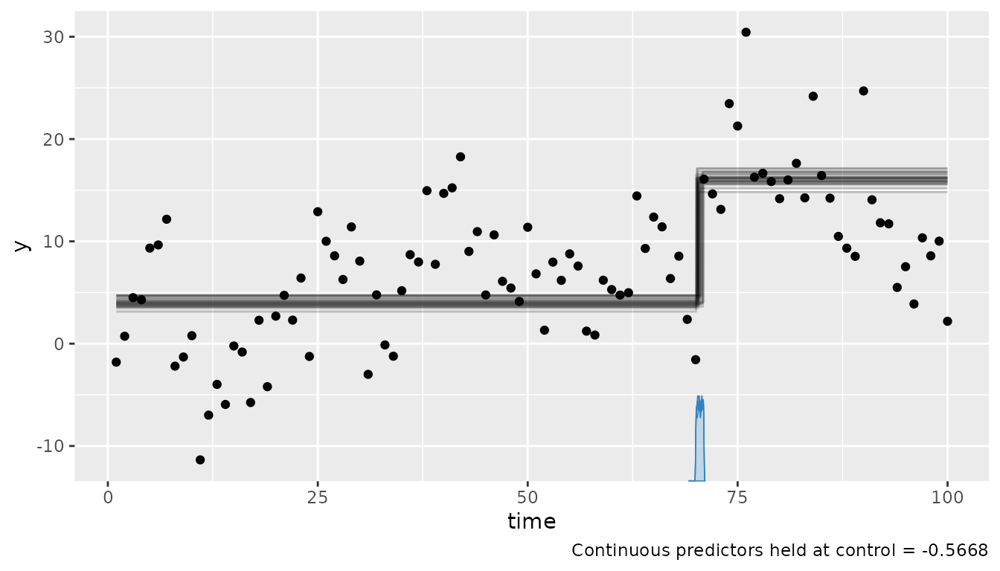
mcp recovers the change point near 70 and the
post-intervention intercept increase. That is useful descriptive
evidence, but it is not a causal effect: mcp has no
counterfactual control-series assumption. Conversely,
CausalImpact estimates the counterfactual effect but
depends critically on controls being unaffected by the intervention and
retaining a stable relation to the response.
Other Structural Break and Time Series Packages on CRAN
-
mosum: Moving Sum statistics for testing and dating mean/variance shifts with confidence intervals. -
trendsegmentR: Linear wavelet-based detection for piecewise-linear trends and slope breaks with robust variance estimators. -
multibreakeR: Econometric testing and estimation of multiple structural breaks in multivariate time series.
Application 3: Algorithmic Change Point Detection & Meta-Packages
Detection packages focus on identifying unknown shift locations in large sequences with high computational efficiency. Detection packages focus on identifying unknown shift locations in large sequences with high computational efficiency, multiscale guarantees, or joint multivariate distributions.
Coordinate System: Algorithmic Detection & Meta-Packages
Algorithmic detection trades off computational scalability (sampling-based MCMC vs. fast dynamic programming / binary segmentation across observations) against signal complexity & inferential scope (piecewise constants vs. slopes, multiscale confidence bands, observation-level posterior profiles, multivariate joint distributions, and meta-interfaces):
library(ggplot2)
df_coord_task3 = data.frame(
pkg = c("changepoint", "not", "stepR", "bcp", "ecp", "smoothbp (SS)", "ggchangepoint", "breakfast"),
x = c(9.5, 8.5, 7.0, 3.0, 4.5, 3.5, 8.0, 7.5),
y = c(2.0, 4.5, 6.0, 7.0, 8.5, 5.5, 9.0, 5.0),
scope = c("Univariate Mean / Var (PELT)", "Univariate Slopes & Steps (NOT)", "Multiscale Mean & Var (HSMUCE)", "Pointwise Posterior Probabilities", "Multivariate Joint Distributions", "Spike-and-Slab Selection", "Meta-Framework (15+ Algorithms)", "Multiscale WBS / Isolate-Detect")
)
ggplot(df_coord_task3, aes(x = x, y = y, label = pkg, color = scope)) +
geom_point(size = 3.8, alpha = 0.9) +
geom_text(aes(y = y + 0.45), fontface = "bold", size = 3.8, show.legend = FALSE) +
scale_x_continuous("Computational Scalability & Speed\n(MCMC / Permutations [10^2-10^3 obs] -> Fast dynamic programming & binary segmentation [10^5-10^6 obs])", limits = c(1, 10.5)) +
scale_y_continuous("Signal Complexity & Inferential Scope\n(Point estimates -> Piecewise slopes -> Multiscale CIs -> Posterior profiles -> Multivariate distributions -> Meta-wrappers)", limits = c(1, 10.5)) +
scale_color_brewer(palette = "Dark2") +
labs(title = "Task 3: Algorithmic Change Point Detection & Meta-Packages", subtitle = "Trade-off between massive throughput and inferential / distributional scope") +
theme_minimal(base_size = 11) +
theme(
panel.grid.minor = element_blank(),
panel.grid.major = element_line(color = "gray90", linewidth = 0.5),
panel.border = element_rect(color = "gray80", fill = NA, linewidth = 0.8),
plot.title = element_text(face = "bold", size = 12),
plot.subtitle = element_text(color = "gray35", size = 9.5),
legend.position = "bottom",
legend.title = element_text(face = "bold", size = 9),
legend.text = element_text(size = 8.5),
axis.title = element_text(face = "bold", size = 9.5)
)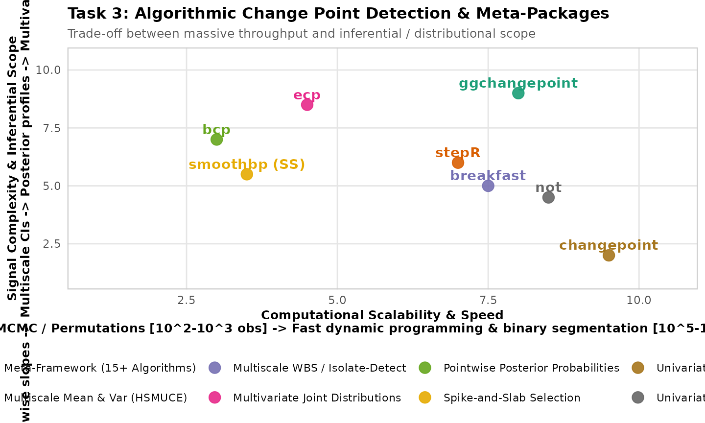
To illustrate high-throughput detection across sequences with many
change points, we use the coriell genomic microarray
dataset (Snijders et al. 2001,
),
which exhibits dozens of abrupt copy-number state transitions along
chromosomes:
data("coriell", package = "bcp")
df_dna = data.frame(
pos = seq_along(na.omit(coriell$Coriell.13330)),
y = as.numeric(na.omit(coriell$Coriell.13330))
)
changepoint: High-Throughput Detection via PELT
changepoint implements fast dynamic programming and
binary segmentation algorithms (PELT, BinSeg), segmenting thousands of
observations in milliseconds:
library(changepoint)
# Detect mean and variance shifts in milliseconds using PELT
fit_cpt = cpt.meanvar(df_dna$y, method = "PELT", penalty = "Manual", pen.value = 15 * log(nrow(df_dna)))
plot(fit_cpt, xlab = "Genomic Index", ylab = "Log2 Ratio", main = "changepoint PELT on Coriell DNA (N = 2,077)")
bcp: Bayesian Change Point Detection
bcp implements the Barry and Hartigan (1993) product
partition model via Markov chain Monte Carlo, estimating the exact
posterior probability profile of a change point at every
observation:
not: Fast Detection of Slope Changes and Steps
not is a fast, univariate detection method for an
unknown number of change points. Unlike changepoint, it
includes piecewise-linear signals with either joined or discontinuous
lines. This example contains both a slope change and an intercept jump
at observation 100. not (Narrowest-Over-Threshold) is a
fast, univariate detection method for an unknown number of change
points. Unlike changepoint, it includes piecewise-linear
signals with either joined or discontinuous lines. This example contains
both a slope change and an intercept jump at observation 100.
set.seed(42)
df_not = data.frame(time = 1:200)
df_not$y = ifelse(
df_not$time <= 100,
5 + 0.03 * df_not$time,
11 + 0.18 * (df_not$time - 100)
) + rnorm(200, sd = 0.8)
plot(y ~ time, data = df_not, pch = 16, col = "gray60")
abline(v = 100, lty = 2, col = "firebrick")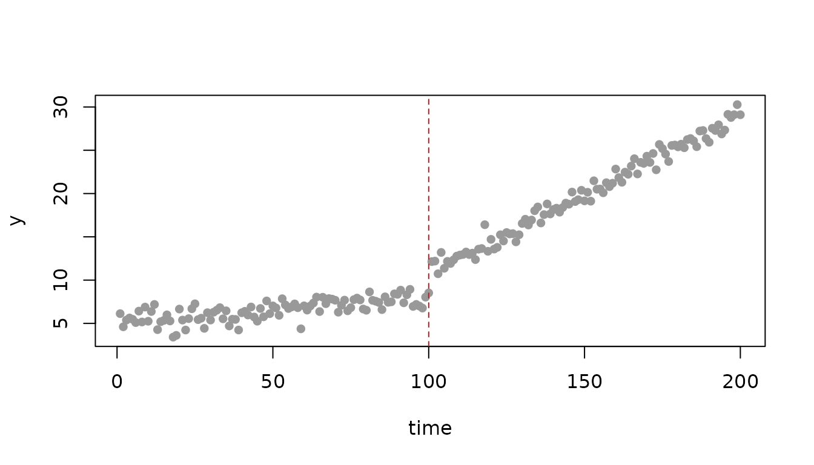
library(not)
fit_not = not(df_not$y, contrast = "pcwsLinMean")
cp_not = features(fit_not, penalty = "sic")$cpt
cp_not
plot(fit_not, cpt = cp_not)The matching mcp formula is a two-segment model with a
new intercept and slope after the change point. Unlike the joined-slope
syntax (~ 0 + time), ~ 1 + time permits the
discontinuity present here.
model_not = list(
y ~ 1 + time,
~ 1 + time
)
fit_mcp_not = mcp(model_not, data = df_not, par_x = "time", seed = 42, adapt = 500, iter = 1000)
summary(fit_mcp_not)
#> Family: gaussian(link = 'identity')
#> Iterations: 1000 from 3 chains.
#> Segments:
#> 1: y ~ 1 + time
#> 2: y ~ 1 ~ 1 + time
#>
#> Change point parameters:
#> name mean sd lower upper rhat ess_bulk ess_tail
#> cp_1 100.487 0.3225 100.005 100.975 1 715 580
#>
#> Population-level parameters:
#> name mean sd lower upper rhat ess_bulk ess_tail
#> Intercept_1 5.087 0.1646 4.784 5.417 1 306 471
#> time_1 0.029 0.0028 0.023 0.034 1 307 574
#> Intercept_2 10.926 0.1623 10.595 11.235 1 269 340
#> time_2 0.182 0.0026 0.177 0.187 1 311 525
#> sigma_1 0.788 0.0406 0.711 0.870 1 1784 1602
#>
#> Warning: 4 parameters show poor convergence (rhat > 1.01 or ess_bulk < 400 or ess_tail < 400).
set.seed(42)
plot(fit_mcp_not)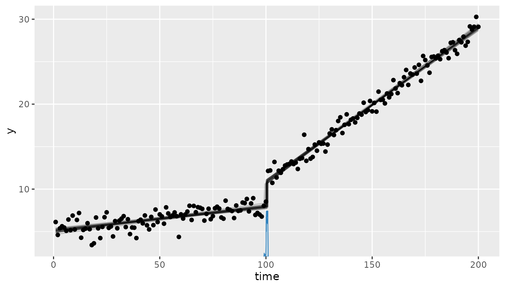
Both methods recover a change near 100. not searches
over the number of changes in one fast procedure, whereas
mcp reports a posterior for the pre-specified single change
point and estimates the two regression lines. For many unknown breaks,
the computational advantage remains with not.
stepR: Multiscale Inference for a Change in Mean and
Variance
stepR estimates a piecewise-constant mean while allowing
the residual standard deviation to change by segment through its HSMUCE
family. This provides simultaneous frequentist confidence statements
while mcp models the mean and log-SD as separate
distributional parameters.
set.seed(42)
df_step = data.frame(time = 1:160)
df_step$y = c(rnorm(80, mean = 0, sd = 0.5), rnorm(80, mean = 2, sd = 1.5))
plot(y ~ time, data = df_step, pch = 16, col = "gray60")
abline(v = 80, lty = 2, col = "firebrick")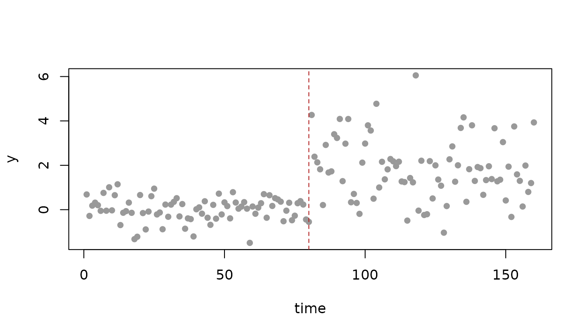
library(stepR)
fit_step = stepFit(
df_step$y,
x = df_step$time,
family = "hsmuce",
alpha = 0.1,
jumpint = TRUE,
confband = TRUE
)
plot(df_step$time, df_step$y, pch = 16, col = "gray60")
lines(fit_step, col = "blue", lwd = 2)
points(jumpint(fit_step), col = "blue", lwd = 2)For mcp, the matching model instantiates both a new mean
and a new log-SD at the same change point. The sigma()
terms are explicit because the implicit Gaussian residual SD is shared
across segments.
model_step = list(
y ~ 1 + sigma(1),
~ 1 + sigma(1)
)
fit_mcp_step = mcp(model_step, data = df_step, par_x = "time", seed = 42, adapt = 500, iter = 1000)
summary(fit_mcp_step)
#> Family: gaussian(link = 'identity')
#> Iterations: 1000 from 3 chains.
#> Segments:
#> 1: y ~ 1 + sigma(1)
#> 2: y ~ 1 ~ 1 + sigma(1)
#>
#> Change point parameters:
#> name mean sd lower upper rhat ess_bulk ess_tail
#> cp_1 80.3350 0.518 79.05 80.98 1 1268 1180
#>
#> Population-level parameters:
#> name mean sd lower upper rhat ess_bulk ess_tail
#> Intercept_1 0.0096 0.060 -0.11 0.13 1 2069 1764
#> Intercept_2 1.8315 0.154 1.52 2.14 1 1740 1749
#> sigma_1 -0.6130 0.081 -0.77 -0.45 1 1797 1664
#> sigma_2 0.3273 0.082 0.17 0.49 1 1399 1583
set.seed(42)
plot(fit_mcp_step, q_predict = TRUE)Both fits identify the break near 80. stepR is
specialized to piecewise-constant signals and reports multiscale
confidence intervals/bands; mcp gives posterior uncertainty
for the location, means, and each segment’s residual SD, and can extend
the same model to slopes, covariates, or GLM likelihoods.
ecp: Multivariate, Distribution-Free Detection
ecp detects changes in the joint distribution of
multivariate observations, not merely a change in each marginal mean.
The following signal changes both means and variances at observation 80.
It has no cross-series correlation, but the simultaneous multivariate
shift is beyond an ordinary univariate mcp likelihood.
set.seed(42)
df_ecp = data.frame(time = 1:160)
df_ecp$y1 = c(rnorm(80, mean = 0, sd = 0.5), rnorm(80, mean = 2, sd = 1.5))
df_ecp$y2 = c(rnorm(80, mean = 1, sd = 0.5), rnorm(80, mean = -1, sd = 1.5))
matplot(df_ecp$time, df_ecp[, c("y1", "y2")], type = "p", pch = 16, col = c("steelblue", "darkorange"), xlab = "Time", ylab = "Response")
abline(v = 80, lty = 2, col = "firebrick")
legend("topleft", legend = c("y1", "y2"), col = c("steelblue", "darkorange"), pch = 16, bty = "n")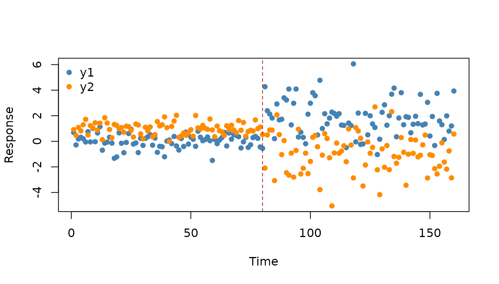
library(ecp)
fit_ecp = e.divisive(
as.matrix(df_ecp[, c("y1", "y2")]),
sig.lvl = 0.05,
R = 199,
min.size = 20
)
fit_ecp$estimatesmcp has no multivariate joint-response likelihood, so
the closest coherent comparison fits one response at a time. For
y1, the model below allows the mean and residual SD to
change at one common, unknown location.
model_ecp = list(
y1 ~ 1 + sigma(1),
~ 1 + sigma(1)
)
fit_mcp_ecp = mcp(model_ecp, data = df_ecp, par_x = "time", seed = 42, adapt = 500, iter = 1000)
summary(fit_mcp_ecp)
#> Family: gaussian(link = 'identity')
#> Iterations: 1000 from 3 chains.
#> Segments:
#> 1: y1 ~ 1 + sigma(1)
#> 2: y1 ~ 1 ~ 1 + sigma(1)
#>
#> Change point parameters:
#> name mean sd lower upper rhat ess_bulk ess_tail
#> cp_1 80.3350 0.518 79.05 80.98 1 1268 1180
#>
#> Population-level parameters:
#> name mean sd lower upper rhat ess_bulk ess_tail
#> Intercept_1 0.0096 0.060 -0.11 0.13 1 2069 1764
#> Intercept_2 1.8315 0.154 1.52 2.14 1 1740 1749
#> sigma_1 -0.6130 0.081 -0.77 -0.45 1 1797 1664
#> sigma_2 0.3273 0.082 0.17 0.49 1 1399 1583
set.seed(42)
plot(fit_mcp_ecp, q_predict = TRUE)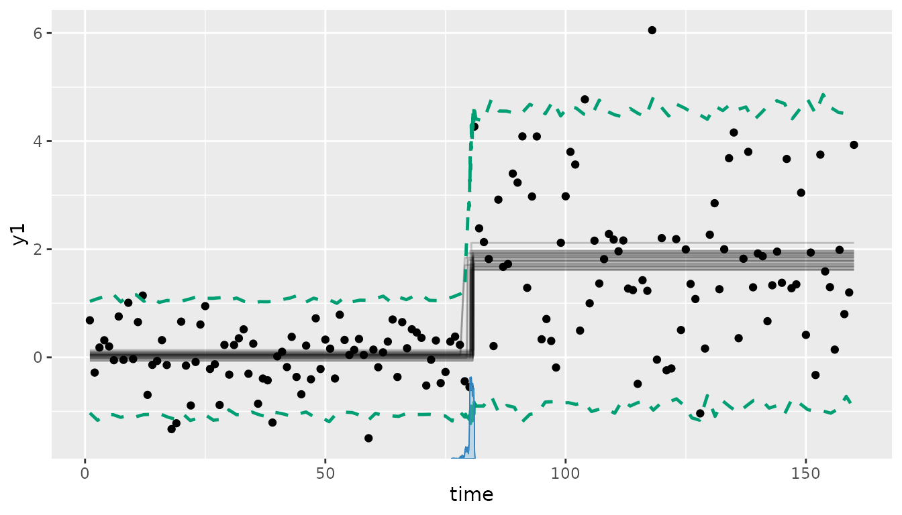
mcp recovers the shared mean/variance break in
y1; repeating the model for y2 checks whether
its location agrees. ecp instead uses both series jointly
and can detect changes in a joint distribution even when a univariate
mean/variance model is misspecified. It therefore complements rather
than competes directly with mcp.
smoothbp_ss: Spike-and-Slab Breakpoint Selection
For discovering whether candidate breakpoints exist within a single
Bayesian piecewise model, smoothbp provides spike-and-slab
variable selection (smoothbp_ss):
library(smoothbp)
fit_ss = smoothbp_ss(
formula = y ~ x,
deltas = list(~ 1, ~ 1),
omega = list(fixed(30), fixed(70)),
rho = list(~ 1, ~ 1),
data = df,
iter = 1000,
warmup = 500,
chains = 2,
seed = 42,
.verbose = FALSE
)
pip(fit_ss)The posterior inclusion probabilities (PIPs) evaluate the probability that each candidate breakpoint is active.
Meta-Packages: ggchangepoint and
tidychangepoint
As the changepoint ecosystem has diversified, meta-packages such as
tidychangepoint and ggchangepoint provide
unified, tidy interfaces wrapping more than a dozen distinct algorithmic
packages. They standardize changepoint outputs, provide automated ggplot
visualizations, and facilitate method comparison across algorithms. They
address the question “Which detection algorithm should I use?”
rather than providing a custom regression specification.
When NOT to Use mcp or smoothbp
Neither package is designed for high-throughput detection across
large sequences with many unknown change points
($\ge
10$). Specifying 10+ ordered change points in MCMC causes severe label
switching, slow sampling, and poor mixing over
permutations. For signals with dozens of unknown shifts across thousands
of observations, use changepoint,
not, or bcp.
Neither package is designed for high-throughput detection across large
sequences with many unknown change points
().
Specifying 10+ ordered change points in MCMC causes severe label
switching, slow sampling, and poor mixing over
permutations. For signals with dozens of unknown shifts across thousands
of observations, use changepoint,
not, or
bcp.
Other Algorithmic Detection Packages on CRAN
-
ggchangepoint/tidychangepoint: Meta-packages providing standardized tidy interfaces and ggplot visualizations across multiple underlying detection packages. -
breakfast&IDetect: Isolate-Detect and Wild Binary Segmentation (WBS) algorithms for multiscale change point detection. -
cpm: Sequential and streaming change point detection with controlled false alarm rates. -
changepoints/changepointsVar/InspectChangepoint: Multivariate, high-dimensional, and VAR covariance change point detection. -
changepoint.geo: High-dimensional change point detection via geometric projection. -
ChangepointTesting: Sequential hypothesis testing for changes in variance and mean.
Summary: Selecting a Package
-
Bayesian piecewise regression: Use
mcpfor full generative modeling (arbitrary per-segment formulas, GLMs, group effects, ARMA, heteroscedasticity) orsmoothbpfor continuous smooth transitions and spike-and-slab selection. -
Bayesian point-wise break detection: Use
bcpfor observation-level posterior break probability profiles, orRbeastfor Bayesian trend and seasonal decomposition. -
Frequentist continuous broken-line regression: Use
segmentedwhen estimating joined slope changes on standardlm()/glm()fits with fast execution. -
Frequentist econometric testing & linear
breaks: Use
strucchangefor formal hypothesis tests (CUSUM/MOSUM) and dating of structural breaks in regression models. -
Bayesian trend & seasonal decomposition: Use
Rbeastfor automated Bayesian model averaging over trend, periodic seasonal cycles, and changepoints on time series. -
Bayesian trend filtering & dynamic shrinkage:
Use
dspwhen the signal has localized features, time-varying coefficients, or unknown numbers of shifts without explicit changepoint parameterization. -
Known intervention with controls: Use
CausalImpactto estimate a causal counterfactual after a pre-specified intervention; a change point alone is not a causal effect estimate. -
Frequentist continuous broken-line regression: Use
segmentedwhen estimating joined slope changes on standardlm()/glm()fits with fast execution. -
Frequentist econometric testing: Use
strucchangefor formal hypothesis tests and dating of structural breaks in regression models. -
Observation-level posterior probabilities: Use
bcpfor point-wise Bayesian break probability profiles . -
High-throughput signal detection: Use
changepoint,not, orstepRfor rapid univariate detection; useecpwhen a joint multivariate distribution may change. -
Meta-comparison across algorithms: Use
ggchangepointortidychangepointfor standardized tidy workflows comparing multiple underlying detection algorithms.